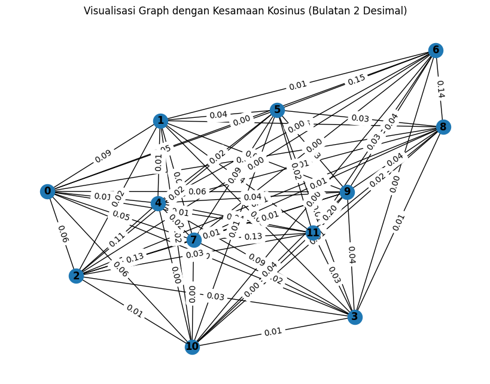
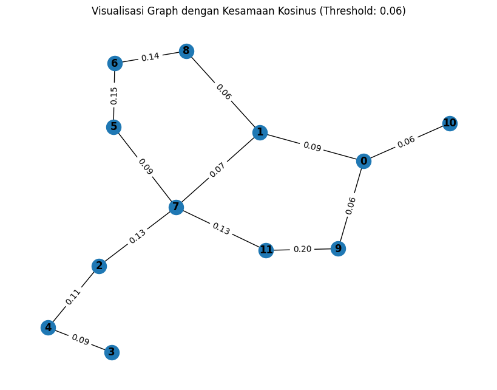

Search Kalimat Penting Dalam Berita#
import requests
from bs4 import BeautifulSoup
import csv
def scrape_detik():
url = 'https://www.detik.com/search/searchnews?query=pemilu+2024&sortby=time&page=1'
req = requests.get(url)
sop = BeautifulSoup(req.text, 'html.parser')
li = sop.find('div', class_='list media_rows list-berita')
lin = li.find_all('article')
x = lin[0] # Ambil hanya satu artikel, yaitu yang pertama
link = x.find('a')['href']
date = x.find('a').find('span', class_='date').text.replace('WIB','').replace('detikNews','').split(',')[1]
headline = x.find('a').find('h2').text
ge_ = requests.get(link).text
sop_ = BeautifulSoup(ge_, 'html.parser')
content = sop_.find('div', class_='detail__body-text itp_bodycontent')
paragraphs = content.find_all('p')
content_ = ''.join([p.get_text(strip=True) for p in paragraphs])
return content_
# Panggil fungsi untuk scraping satu artikel
data = scrape_detik()
print(data)
Ada yang menarik saat capres Koalisi Indonesia Maju (KIM)Prabowo Subiantomenyampaikan pidato usai penetapan nomor urut di Pilpres 2024. Prabowo secara khusus menyapaMuhaimin Iskandar(Cak Imin) dengan berpantun 'kawan lama dilupa jangan'.Pantun tersebut disampaikan Prabowo saat memberikan pidato pengundian nomor urut capres-cawapres di gedung KPU, Menteng, Jakarta Pusat, Selasa (14/11/2023) malam. Pada penetapan nomor urut ini, para masing-masing pasangan calon presiden dan calon wakil presiden diberikan kesempatan untuk menyampaikan pidato.Mulanya, pasangan Anies Baswedan dan Cak Imin (AMIN) yang berpidato pertama. Pidato pasangan AMIN dibacakan Cak Imin.ADVERTISEMENTSCROLL TO CONTINUE WITH CONTENTDalam pidatonya, Cak Imin menyinggung perihal pemilu harus berjalan jujur hingga adil. Cak imin menyampaikan bila ada kecurangan dalam pemilu harus dilaporkan.Setelah itu, giliran pasangan Prabowo Subianto dan Gibran Rakabuming Raka yang berpidato. Prabowo yang membacakan pidato tersebut.Prabowo pun mengaku sependapat dengan pernyataan Cak Imin yang merupakan sahabat lamanya. Sontak pernyataan Prabowo itu pun mendapat tepuk tangan dari hadirin."Saya juga sependapat dengan pasangan calon nomor urut 1, terutama yang disampaikan oleh Gus Muhaimin saya. Sahabat lama saya," kata Prabowo disambut tepuk tangan hadirin.Prabowo lantas menyapa khusus Cak Imin dengan berpantun. Dalam pantun itu, Prabowo menyinggung jangan melupakan kawan lama setelah mendapat kawan baru.Seperti diketahui, Cak Imin sempat bergabung dengan Koalisi Indonesia Maju. Namun di tengah perjalanan, Cak Imin pindah koalisi ke Koalisi Perubahan."Saya juga punya pantun Gus Muhaimin," ujar Prabowo.Berikut pantun yang dibacakan Prabowo untuk Cak Imin:Satu dua cempaka biruTiga empat dalam jabanganKalau mendapat kawan baruKawan lama dilupa jangan
import nltk
from nltk.tokenize import sent_tokenize
nltk.download('punkt')
# Fungsi untuk menghapus tanda baca, tokenisasi, dan stemming per kata dalam setiap kalimat
def tokenisasi_text(teks):
# Tokenisasi kalimat
kalimat = sent_tokenize(teks)
return kalimat
sentence = tokenisasi_text(data)
print(sentence)
[nltk_data] Downloading package punkt to /root/nltk_data...
[nltk_data] Unzipping tokenizers/punkt.zip.
['Ada yang menarik saat capres Koalisi Indonesia Maju (KIM)Prabowo Subiantomenyampaikan pidato usai penetapan nomor urut di Pilpres 2024.', "Prabowo secara khusus menyapaMuhaimin Iskandar(Cak Imin) dengan berpantun 'kawan lama dilupa jangan'.Pantun tersebut disampaikan Prabowo saat memberikan pidato pengundian nomor urut capres-cawapres di gedung KPU, Menteng, Jakarta Pusat, Selasa (14/11/2023) malam.", 'Pada penetapan nomor urut ini, para masing-masing pasangan calon presiden dan calon wakil presiden diberikan kesempatan untuk menyampaikan pidato.Mulanya, pasangan Anies Baswedan dan Cak Imin (AMIN) yang berpidato pertama.', 'Pidato pasangan AMIN dibacakan Cak Imin.ADVERTISEMENTSCROLL TO CONTINUE WITH CONTENTDalam pidatonya, Cak Imin menyinggung perihal pemilu harus berjalan jujur hingga adil.', 'Cak imin menyampaikan bila ada kecurangan dalam pemilu harus dilaporkan.Setelah itu, giliran pasangan Prabowo Subianto dan Gibran Rakabuming Raka yang berpidato.', 'Prabowo yang membacakan pidato tersebut.Prabowo pun mengaku sependapat dengan pernyataan Cak Imin yang merupakan sahabat lamanya.', 'Sontak pernyataan Prabowo itu pun mendapat tepuk tangan dari hadirin.', '"Saya juga sependapat dengan pasangan calon nomor urut 1, terutama yang disampaikan oleh Gus Muhaimin saya.', 'Sahabat lama saya," kata Prabowo disambut tepuk tangan hadirin.Prabowo lantas menyapa khusus Cak Imin dengan berpantun.', 'Dalam pantun itu, Prabowo menyinggung jangan melupakan kawan lama setelah mendapat kawan baru.Seperti diketahui, Cak Imin sempat bergabung dengan Koalisi Indonesia Maju.', 'Namun di tengah perjalanan, Cak Imin pindah koalisi ke Koalisi Perubahan.', '"Saya juga punya pantun Gus Muhaimin," ujar Prabowo.Berikut pantun yang dibacakan Prabowo untuk Cak Imin:Satu dua cempaka biruTiga empat dalam jabanganKalau mendapat kawan baruKawan lama dilupa jangan']
import math
from collections import Counter
import pandas as pd
# Menghitung jumlah kata dalam setiap kalimat
tf_kalimat = [Counter(words.split()) for words in sentence]
# Menghitung IDF (Inverse Document Frequency)
def calculate_tf_idf(tf_kalimat):
num_documents = len(tf_kalimat)
idf_values = {}
# Mencari setiap kata dalam setiap kalimat untuk menghitung IDF
for tf in tf_kalimat:
for word, count in tf.items():
if word in idf_values:
idf_values[word] += 1
else:
idf_values[word] = 1
tf_idf_kalimat = []
for tf in tf_kalimat:
tf_idf = {}
for word, count in tf.items():
tf_idf[word] = (count / len(tf)) * math.log(num_documents / idf_values[word])
tf_idf_kalimat.append(tf_idf)
return tf_idf_kalimat
# Hasil TF-IDF
hasil_tf_idf = calculate_tf_idf(tf_kalimat)
# Mengonversi list of dicts ke dalam DataFrame
df_tf_idf = pd.DataFrame(hasil_tf_idf)
df_tf_idf.fillna(0, inplace=True) # Mengganti nilai NaN dengan 0
# Tampilkan hasil dalam DataFrame
df_tf_idf
| Ada | yang | menarik | saat | capres | Koalisi | Indonesia | Maju | (KIM)Prabowo | Subiantomenyampaikan | ... | Muhaimin," | ujar | Prabowo.Berikut | Imin:Satu | dua | cempaka | biruTiga | empat | jabanganKalau | baruKawan | |
|---|---|---|---|---|---|---|---|---|---|---|---|---|---|---|---|---|---|---|---|---|---|
| 0 | 0.13805 | 0.038508 | 0.13805 | 0.099542 | 0.13805 | 0.077016 | 0.099542 | 0.13805 | 0.13805 | 0.13805 | ... | 0.000000 | 0.000000 | 0.000000 | 0.000000 | 0.000000 | 0.000000 | 0.000000 | 0.000000 | 0.000000 | 0.000000 |
| 1 | 0.00000 | 0.000000 | 0.00000 | 0.059725 | 0.00000 | 0.000000 | 0.000000 | 0.00000 | 0.00000 | 0.00000 | ... | 0.000000 | 0.000000 | 0.000000 | 0.000000 | 0.000000 | 0.000000 | 0.000000 | 0.000000 | 0.000000 | 0.000000 |
| 2 | 0.00000 | 0.027726 | 0.00000 | 0.000000 | 0.00000 | 0.000000 | 0.000000 | 0.00000 | 0.00000 | 0.00000 | ... | 0.000000 | 0.000000 | 0.000000 | 0.000000 | 0.000000 | 0.000000 | 0.000000 | 0.000000 | 0.000000 | 0.000000 |
| 3 | 0.00000 | 0.000000 | 0.00000 | 0.000000 | 0.00000 | 0.000000 | 0.000000 | 0.00000 | 0.00000 | 0.00000 | ... | 0.000000 | 0.000000 | 0.000000 | 0.000000 | 0.000000 | 0.000000 | 0.000000 | 0.000000 | 0.000000 | 0.000000 |
| 4 | 0.00000 | 0.033007 | 0.00000 | 0.000000 | 0.00000 | 0.000000 | 0.000000 | 0.00000 | 0.00000 | 0.00000 | ... | 0.000000 | 0.000000 | 0.000000 | 0.000000 | 0.000000 | 0.000000 | 0.000000 | 0.000000 | 0.000000 | 0.000000 |
| 5 | 0.00000 | 0.092420 | 0.00000 | 0.000000 | 0.00000 | 0.000000 | 0.000000 | 0.00000 | 0.00000 | 0.00000 | ... | 0.000000 | 0.000000 | 0.000000 | 0.000000 | 0.000000 | 0.000000 | 0.000000 | 0.000000 | 0.000000 | 0.000000 |
| 6 | 0.00000 | 0.000000 | 0.00000 | 0.000000 | 0.00000 | 0.000000 | 0.000000 | 0.00000 | 0.00000 | 0.00000 | ... | 0.000000 | 0.000000 | 0.000000 | 0.000000 | 0.000000 | 0.000000 | 0.000000 | 0.000000 | 0.000000 | 0.000000 |
| 7 | 0.00000 | 0.043322 | 0.00000 | 0.000000 | 0.00000 | 0.000000 | 0.000000 | 0.00000 | 0.00000 | 0.00000 | ... | 0.000000 | 0.000000 | 0.000000 | 0.000000 | 0.000000 | 0.000000 | 0.000000 | 0.000000 | 0.000000 | 0.000000 |
| 8 | 0.00000 | 0.000000 | 0.00000 | 0.000000 | 0.00000 | 0.000000 | 0.000000 | 0.00000 | 0.00000 | 0.00000 | ... | 0.000000 | 0.000000 | 0.000000 | 0.000000 | 0.000000 | 0.000000 | 0.000000 | 0.000000 | 0.000000 | 0.000000 |
| 9 | 0.00000 | 0.000000 | 0.00000 | 0.000000 | 0.00000 | 0.066014 | 0.085322 | 0.00000 | 0.00000 | 0.00000 | ... | 0.000000 | 0.000000 | 0.000000 | 0.000000 | 0.000000 | 0.000000 | 0.000000 | 0.000000 | 0.000000 | 0.000000 |
| 10 | 0.00000 | 0.000000 | 0.00000 | 0.000000 | 0.00000 | 0.126027 | 0.000000 | 0.00000 | 0.00000 | 0.00000 | ... | 0.000000 | 0.000000 | 0.000000 | 0.000000 | 0.000000 | 0.000000 | 0.000000 | 0.000000 | 0.000000 | 0.000000 |
| 11 | 0.00000 | 0.026660 | 0.00000 | 0.000000 | 0.00000 | 0.000000 | 0.000000 | 0.00000 | 0.00000 | 0.00000 | ... | 0.095573 | 0.095573 | 0.095573 | 0.095573 | 0.095573 | 0.095573 | 0.095573 | 0.095573 | 0.095573 | 0.095573 |
12 rows × 155 columns
import math
from collections import Counter
from sklearn.metrics.pairwise import cosine_similarity
import pandas as pd
# Diasumsikan hasil_tf_idf adalah list yang berisi nilai TF-IDF
# Mengonversi list dari kamus ke DataFrame pandas
df_tf_idf = pd.DataFrame(hasil_tf_idf)
df_tf_idf = df_tf_idf.fillna(0) # Mengganti nilai NaN dengan 0
# Mengonversi DataFrame ke array NumPy untuk perhitungan kesamaan kosinus
tfidf_matrix = df_tf_idf.to_numpy()
# Menghitung kesamaan kosinus
similarity_matrix = cosine_similarity(tfidf_matrix)
df_tf_idf = pd.DataFrame(similarity_matrix)
kalimat = ["Kalimat " + str(i) for i in range(1, len(similarity_matrix) + 1)]
df_tf_idf = df_tf_idf.set_axis(kalimat, axis=0)
df_tf_idf = df_tf_idf.set_axis(kalimat, axis=1)
df_tf_idf
| Kalimat 1 | Kalimat 2 | Kalimat 3 | Kalimat 4 | Kalimat 5 | Kalimat 6 | Kalimat 7 | Kalimat 8 | Kalimat 9 | Kalimat 10 | Kalimat 11 | Kalimat 12 | |
|---|---|---|---|---|---|---|---|---|---|---|---|---|
| Kalimat 1 | 1.000000 | 0.093254 | 0.058259 | 0.000000 | 0.005915 | 0.046414 | 0.000000 | 0.045409 | 0.000000 | 0.064754 | 0.064746 | 0.005242 |
| Kalimat 2 | 0.093254 | 1.000000 | 0.016759 | 0.000000 | 0.005204 | 0.038295 | 0.007801 | 0.072943 | 0.062006 | 0.023448 | 0.023552 | 0.039677 |
| Kalimat 3 | 0.058259 | 0.016759 | 1.000000 | 0.027058 | 0.110124 | 0.018224 | 0.000000 | 0.129712 | 0.006720 | 0.005735 | 0.007657 | 0.029651 |
| Kalimat 4 | 0.000000 | 0.000000 | 0.027058 | 1.000000 | 0.086164 | 0.011461 | 0.000000 | 0.016657 | 0.010524 | 0.044613 | 0.011991 | 0.033969 |
| Kalimat 5 | 0.005915 | 0.005204 | 0.110124 | 0.086164 | 1.000000 | 0.020729 | 0.004875 | 0.024073 | 0.006116 | 0.042053 | 0.002518 | 0.041133 |
| Kalimat 6 | 0.046414 | 0.038295 | 0.018224 | 0.011461 | 0.020729 | 1.000000 | 0.147293 | 0.092128 | 0.029922 | 0.025536 | 0.012918 | 0.018372 |
| Kalimat 7 | 0.000000 | 0.007801 | 0.000000 | 0.000000 | 0.004875 | 0.147293 | 1.000000 | 0.000000 | 0.135252 | 0.038049 | 0.000000 | 0.032904 |
| Kalimat 8 | 0.045409 | 0.072943 | 0.129712 | 0.016657 | 0.024073 | 0.092128 | 0.000000 | 1.000000 | 0.013131 | 0.011206 | 0.000000 | 0.127851 |
| Kalimat 9 | 0.000000 | 0.062006 | 0.006720 | 0.010524 | 0.006116 | 0.029922 | 0.135252 | 0.013131 | 1.000000 | 0.040078 | 0.011862 | 0.019801 |
| Kalimat 10 | 0.064754 | 0.023448 | 0.005735 | 0.044613 | 0.042053 | 0.025536 | 0.038049 | 0.011206 | 0.040078 | 1.000000 | 0.040293 | 0.199665 |
| Kalimat 11 | 0.064746 | 0.023552 | 0.007657 | 0.011991 | 0.002518 | 0.012918 | 0.000000 | 0.000000 | 0.011862 | 0.040293 | 1.000000 | 0.002232 |
| Kalimat 12 | 0.005242 | 0.039677 | 0.029651 | 0.033969 | 0.041133 | 0.018372 | 0.032904 | 0.127851 | 0.019801 | 0.199665 | 0.002232 | 1.000000 |
import math
from collections import Counter
import networkx as nx
from sklearn.metrics.pairwise import cosine_similarity
import pandas as pd
import matplotlib.pyplot as plt
# Diasumsikan similarity_matrix sudah didefinisikan sebelumnya
# Contoh similarity_matrix
G = nx.Graph()
for i in range(len(similarity_matrix)):
for j in range(len(similarity_matrix[0])):
if i != j:
similarity = round(similarity_matrix[i][j], 2) # Bulatkan nilai ke 2 angka dibelakang koma
G.add_edge(i, j, weight=similarity)
# Visualisasi grafik
plt.figure(figsize=(8, 6))
pos = nx.spring_layout(G) # Menentukan layout grafik
nx.draw(G, pos, with_labels=True, font_weight='bold') # Menggambar grafik dengan label node
edge_labels = nx.get_edge_attributes(G, 'weight') # Mendapatkan atribut edge (bobot)
# Mengubah nilai bobot menjadi string dengan 2 angka di belakang koma
edge_labels = {(i, j): f"{weight:.2f}" for (i, j), weight in edge_labels.items()}
nx.draw_networkx_edge_labels(G, pos, edge_labels=edge_labels) # Menampilkan label bobot pada edge
plt.title("Visualisasi Graph dengan Kesamaan Kosinus (Bulatan 2 Desimal)")
plt.show()

import math
from collections import Counter
import networkx as nx
from sklearn.metrics.pairwise import cosine_similarity
import pandas as pd
import matplotlib.pyplot as plt
# Diasumsikan similarity_matrix sudah didefinisikan sebelumnya
# Contoh similarity_matrix
G = nx.Graph()
threshold = 0.06 # Threshold untuk menyambungkan node
# Tambahkan semua node ke grafik
G.add_nodes_from(range(len(similarity_matrix)))
# Tambahkan edge antara node yang nilainya melebihi threshold
for i in range(len(similarity_matrix)):
for j in range(len(similarity_matrix[0])):
if i != j and similarity_matrix[i][j] > threshold:
similarity = round(similarity_matrix[i][j], 2) # Bulatkan nilai ke 2 angka dibelakang koma
G.add_edge(i, j, weight=similarity)
# Visualisasi grafik
plt.figure(figsize=(8, 6))
pos = nx.spring_layout(G) # Menentukan layout grafik
nx.draw(G, pos, with_labels=True, font_weight='bold') # Menggambar grafik dengan label node
edge_labels = nx.get_edge_attributes(G, 'weight') # Mendapatkan atribut edge (bobot)
# Mengubah nilai bobot menjadi string dengan 2 angka di belakang koma
edge_labels = {(i, j): f"{weight:.2f}" for (i, j), weight in edge_labels.items()}
nx.draw_networkx_edge_labels(G, pos, edge_labels=edge_labels) # Menampilkan label bobot pada edge
# Tambahkan label pada node yang tidak terhubung
isolated_nodes = list(nx.isolates(G))
if isolated_nodes:
# isolated_nodes_labels = {node: f'Node {node} (Not connected)' for node in isolated_nodes}
pos_extra = {node: (pos[node][0], pos[node][1] + 0.1) for node in isolated_nodes}
plt.title(f"Visualisasi Graph dengan Kesamaan Kosinus (Threshold: {threshold})")
plt.show()

# Menghitung closeness centrality dari graph
closeness = nx.closeness_centrality(G)
# Menampilkan closeness centrality
print("Closeness Centrality:")
for node, closeness_value in closeness.items():
print(f"Node {node}: {closeness_value}")
# Menampilkan 3 kalimat dengan PageRank tertinggi
sorted_pagerank = sorted(closeness.items(), key=lambda x: x[1], reverse=True)
print("=============================")
print("Top 3 sentences based on closeness centrality:")
for node, rank in sorted_pagerank[:3]:
print(sentence[node])
print("=============================")
print("Top 3 node based on closeness centrality:")
for node, rank in sorted_pagerank[:3]:
print(f"Node {node} dengan PageRank {rank:.4f}")
Closeness Centrality:
Node 0: 0.4074074074074074
Node 1: 0.5
Node 2: 0.4230769230769231
Node 3: 0.25
Node 4: 0.3235294117647059
Node 5: 0.4074074074074074
Node 6: 0.34375
Node 7: 0.55
Node 8: 0.3793103448275862
Node 9: 0.36666666666666664
Node 10: 0.2972972972972973
Node 11: 0.4230769230769231
=============================
Top 3 sentences based on closeness centrality:
"Saya juga sependapat dengan pasangan calon nomor urut 1, terutama yang disampaikan oleh Gus Muhaimin saya.
Prabowo secara khusus menyapaMuhaimin Iskandar(Cak Imin) dengan berpantun 'kawan lama dilupa jangan'.Pantun tersebut disampaikan Prabowo saat memberikan pidato pengundian nomor urut capres-cawapres di gedung KPU, Menteng, Jakarta Pusat, Selasa (14/11/2023) malam.
Pada penetapan nomor urut ini, para masing-masing pasangan calon presiden dan calon wakil presiden diberikan kesempatan untuk menyampaikan pidato.Mulanya, pasangan Anies Baswedan dan Cak Imin (AMIN) yang berpidato pertama.
=============================
Top 3 node based on closeness centrality:
Node 7 dengan PageRank 0.5500
Node 1 dengan PageRank 0.5000
Node 2 dengan PageRank 0.4231
# Hitung PageRank
pagerank = nx.pagerank(G)
# Menampilkan Closeness Centrality
print("PageRank:")
for node, rank in pagerank.items():
print(f"Node {node}: {rank}")
# Menampilkan 3 kalimat dengan PageRank tertinggi
sorted_pagerank = sorted(pagerank.items(), key=lambda x: x[1], reverse=True)
print("=============================")
print("Top 3 sentences based on PageRank:")
for node, rank in sorted_pagerank[:3]:
print(sentence[node])
print("=============================")
print("Top 3 node based on PageRank:")
for node, rank in sorted_pagerank[:3]:
print(f"Node {node} dengan PageRank {rank:.4f}")
#sorted_pagerank = sorted(pagerank.items(), key=lambda x: x[1], reverse=True)
PageRank:
Node 0: 0.08668818663299949
Node 1: 0.08161037583467903
Node 2: 0.08814816056826143
Node 3: 0.045070287788397445
Node 4: 0.08514969838095691
Node 5: 0.08025821013538685
Node 6: 0.09767978770580409
Node 7: 0.13622278591622516
Node 8: 0.07150159833530628
Node 9: 0.08814450814351273
Node 10: 0.03355275181367221
Node 11: 0.10597364874479813
=============================
Top 3 sentences based on PageRank:
"Saya juga sependapat dengan pasangan calon nomor urut 1, terutama yang disampaikan oleh Gus Muhaimin saya.
"Saya juga punya pantun Gus Muhaimin," ujar Prabowo.Berikut pantun yang dibacakan Prabowo untuk Cak Imin:Satu dua cempaka biruTiga empat dalam jabanganKalau mendapat kawan baruKawan lama dilupa jangan
Sontak pernyataan Prabowo itu pun mendapat tepuk tangan dari hadirin.
=============================
Top 3 node based on PageRank:
Node 7 dengan PageRank 0.1362
Node 11 dengan PageRank 0.1060
Node 6 dengan PageRank 0.0977
# Hitung Eigenvector Centrality
eigenvector = nx.eigenvector_centrality(G)
# Hitung Eigenvalue Centrality
eigenvalue = nx.eigenvector_centrality_numpy(G)
# Menampilkan Eigenvector Centrality
print("Eigenvector Centrality:")
for node, eigenvector_value in eigenvector.items():
print(f"Node {node}: {eigenvector_value:.4f}")
# Menampilkan 3 kalimat dengan PageRank tertinggi
sorted_pagerank = sorted(eigenvector.items(), key=lambda x: x[1], reverse=True)
print("=============================")
print("Top 3 sentences based on PageRank:")
for node, rank in sorted_pagerank[:3]:
print(sentence[node])
print("=============================")
print("Top 3 node based on PageRank:")
for node, rank in sorted_pagerank[:3]:
print(f"Node {node} dengan PageRank {rank:.4f}")
print("=============================")
# Menampilkan Eigenvalue Centrality
print("Eigenvalue Centrality:")
for node, eigenvalue_value in eigenvalue.items():
print(f"Node {node}: {eigenvalue_value:.4f}")
# Menampilkan 3 kalimat dengan PageRank tertinggi
sorted_pagerank = sorted(eigenvalue.items(), key=lambda x: x[1], reverse=True)
print("=============================")
print("Top 3 sentences based on PageRank:")
for node, rank in sorted_pagerank[:3]:
print(sentence[node])
print("=============================")
print("Top 3 node based on PageRank:")
for node, rank in sorted_pagerank[:3]:
print(f"Node {node} dengan PageRank {rank:.4f}")
Eigenvector Centrality:
Node 0: 0.3239
Node 1: 0.4351
Node 2: 0.2494
Node 3: 0.0470
Node 4: 0.1180
Node 5: 0.2896
Node 6: 0.2191
Node 7: 0.5080
Node 8: 0.2606
Node 9: 0.2491
Node 10: 0.1290
Node 11: 0.3015
=============================
Top 3 sentences based on PageRank:
"Saya juga sependapat dengan pasangan calon nomor urut 1, terutama yang disampaikan oleh Gus Muhaimin saya.
Prabowo secara khusus menyapaMuhaimin Iskandar(Cak Imin) dengan berpantun 'kawan lama dilupa jangan'.Pantun tersebut disampaikan Prabowo saat memberikan pidato pengundian nomor urut capres-cawapres di gedung KPU, Menteng, Jakarta Pusat, Selasa (14/11/2023) malam.
Ada yang menarik saat capres Koalisi Indonesia Maju (KIM)Prabowo Subiantomenyampaikan pidato usai penetapan nomor urut di Pilpres 2024.
=============================
Top 3 node based on PageRank:
Node 7 dengan PageRank 0.5080
Node 1 dengan PageRank 0.4351
Node 0 dengan PageRank 0.3239
=============================
Eigenvalue Centrality:
Node 0: 0.3239
Node 1: 0.4351
Node 2: 0.2493
Node 3: 0.0470
Node 4: 0.1180
Node 5: 0.2896
Node 6: 0.2191
Node 7: 0.5080
Node 8: 0.2606
Node 9: 0.2491
Node 10: 0.1290
Node 11: 0.3015
=============================
Top 3 sentences based on PageRank:
"Saya juga sependapat dengan pasangan calon nomor urut 1, terutama yang disampaikan oleh Gus Muhaimin saya.
Prabowo secara khusus menyapaMuhaimin Iskandar(Cak Imin) dengan berpantun 'kawan lama dilupa jangan'.Pantun tersebut disampaikan Prabowo saat memberikan pidato pengundian nomor urut capres-cawapres di gedung KPU, Menteng, Jakarta Pusat, Selasa (14/11/2023) malam.
Ada yang menarik saat capres Koalisi Indonesia Maju (KIM)Prabowo Subiantomenyampaikan pidato usai penetapan nomor urut di Pilpres 2024.
=============================
Top 3 node based on PageRank:
Node 7 dengan PageRank 0.5080
Node 1 dengan PageRank 0.4351
Node 0 dengan PageRank 0.3239